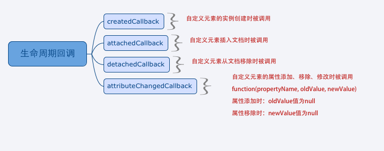

授人以鱼不如授人以渔
如果把组件比作鱼，那么w3c组织定制的标准和浏览器厂商的实现都是鱼，并没有赋予开发者们真正的渔。 开发者们在现有的技术和条件下，用五花八门的方法创造了各种组件。但是却严重缺乏规范。 而Web Component则在组件标准化方面贡献了重大的力量。当然，Web Component 只是规范了接口，底层实现是完全自由的。
Web Component目前只是作为草案，还没有完全的标准化。API可在变动中。但我们可以先来学习一下
先来说说浏览器的支持情况先，免得看官觉得不规范的东西没有必要学习了
Chrome 27和Firfox23都提供了对document.registerElement（）的支持。
Chrome 31是第一个真正支持新规范的版本
在浏览器支持稳定的版本之前：
- Google的Polymer的兼容方案
- Mozilla的x-tags
Web Component不是Web 组件，确切说应该是web组件标准化。Web Component使开发人员拥有扩展浏览器标签的能力，可以自由定制组件。
Web组件
Web组件就是一套封装好的HTML、CSS、Js。
特点：可复用
例子：下拉菜单、按钮、图片轮播、日历控件
对比Web 组件，Web Component有什么用呢？
首先，组件内部是可以被访问和影响的。而通过Web Component封装出来的组件，可以选择让组件内部隐藏起来。
Web Component
组成：
- Custom Elements( 核心 )
- HTML Templates
- Shadow Dom
- HTML Imports
Custom Elements
自定义元素。通过document.registerElement( )对自定义元素进行注册。该方法返回一个元素的构造器。通过构造器，我们可以创建自定义元素的实例了
var MyButton = document.registerElement(‘my-button’);
document.body.appendChild(new MyButton());document.registerElement（tagName, [prototype]） 是接受2个参数的。
第二个可选
- tagName. 必须包含连字符“-”。这是为了区分自定义元素和HTML规范的元素
- prototype.可选。用来描述元素的原型。为元素自定义接口
var MyElement = document.registerElement('my-element', {
prototype: Object.create(HTMLElement.prototype, {
createdCallback: {
value: function() {
this.innerHTML = "<p>I'm a Custom Element</p>"
}
}
})
});
document.body.appendChild(new MyElement());其中,Object.create() 是创建一个继承自 HTMLElement原型的对象 作为自定义对象的原型。
并且设置元素默认的innerHTML
下面的写法跟上面是同一个效果
var MyElementProto = Object.create(HTMLElement.prototype)
MyElementProto.createdCallback = function() {
this.innerHTML = "<p>I'm a Custom Element</p>"
}
var MyElement = document.registerElement('my-element', { prototype: MyElementProto })
document.body.appendChild(new MyElement())对元素的拓展
比如要拓展Button元素
var MyButton = document.registerElement(‘my-button’, {
prototype: Object.create(HTMLButtonElement.prototype)
})这类的自定义元素被称为类型扩展自定义元素
使用：
<button is=“my-button”>
元素的提升
首先，浏览器中的HTML解析器对非标准标签并不会报错，这是为什么呢？
比如我们申明了一个<qwe>标签，一切都很正常，并不会出现报错的情况。
根据HTML规范，非标准的元素使用的是HTMLUnKnownElement 接口
但是对于自定义标签（即有连接符的标签）就不一样了，它是拥有合法元素名的，所以是继承自HTMLElement的
下面这段代码就给出了答案，两者都是输出true
// “tabs”不是一个合法的自定义元素名
document.createElement('tabs').__proto__ === HTMLUnknownElement.prototype
// “x-tabs”是一个合法的自定义元素名
document.createElement('x-tabs').__proto__ == HTMLElement.prototype注意：在不支持document.registerElement（）的浏览器，自定义标签是继承自HTMLUnknownElement的
那什么是元素的提升？？？
比如我们现在HTML中声明了<x-tabs>标签，然后再调用document.registerElement（’x-tabs’）`
在声明了元素，但在注册元素之前，我们就称该元素是Unresolved元素。他们拥有合法的元素名，只是还没有注册。
Unresolved元素可以理解为一个中间态的状态，在等待浏览器提升为一个新元素
实例化元素
自定义元素可以在HTML中声明，也可以在JS中创建。跟正常的标签是一样的。
实例化自定义标签
HTML中：
<x-tabs></x-tabs>
js中：
var xtabs = document.createElement(‘x-tabs')
使用new 构造器
var xtabs = new Xtabs()
document.body.appendChild(xtabs)实例化类型扩展元素
HTML中：
<button is=“my-button”>
js中：
var button = document.createElement(‘button’, ‘my-button’)
添加属性和方法
var XFooProto = Object.create(HTMLElement.prototype);
// 1. 为 x-foo 创建 foo() 方法
XFooProto.foo = function() {
alert('foo() called');
};// 2. 定义一个只读的“bar”属性
Object.defineProperty(XFooProto, "bar", {value: 5});
// 3. 注册 x-foo 的定义
var XFoo = document.registerElement('x-foo', {prototype: XFooProto});
// 4. 创建一个 x-foo 实例
var xfoo = document.createElement('x-foo');
// 5. 插入页面
document.body.appendChild(xfoo);
当然最后面的4、5可以用new构造器来创建 如果不喜欢这种构造prototype的方法，也可以像下面这样写
var XFoo = document.registerElement('x-foo', {
prototype: Object.create(HTMLElement.prototype, {
bar: {
get: function() { return 5; }
},
foo: {
value: function() {
alert('foo() called');
}
}
})
});第一种是直接使用了ES5的Object.defineProperty
第二种使用了get/set
生命周期回调方法
createdCallback属性，值是一个回调函数，在自定义元素被创建时被调用
不同的时期，都有不同的回调函数。 这些回调函数保存在一个叫做 生命周期回调 的键值对集合中。

createdCallback、attachCallback、detachedCallback、attributeChangeCallback
DOM:
<div id="modify">
<label class="CEgreen"><input type="radio" name="CEclass" value="green">green box</label>
<label class="CEred"><input type="radio" name="CEclass" value="red">red box</label>
</div>JS:
var MyElement = document.registerElement('my-element', {
prototype: Object.create(HTMLElement.prototype, {
createdCallback: {
value: function() {
this.innerHTML = "<span>I'm a Custom Element</span>"
}
},
attributeChangedCallback: {
value: function(property, oldValue, newValue) {
this.innerHTML = "attribute '" + property + "' is modified to " + newValue
}
}
})
})
document.body.appendChild(new MyElement())
var temp = document.querySelector("#modify")
var myElement = document.querySelector("my-element")
temp.addEventListener('click', function(e){
console.log(e.target.value)
myElement.className = e.target.value
})另外，给自定义元素添加样式和普通元素是一样的，这是上面例子中为自定义元素添加的样式：
my-element {display: inline-block;margin-top: 20px;padding: 10px;font-size: 24px;}
如果希望元素内部不受外部样式影响，需要使用Shadow Dom对内部的dom结构和样式进行封装
Shadow Dom封装内部
Shadow Dom能干什么？ 他能为自定义元素提供：
- 隐藏内部’龌蹉’的实现，做统一接口
- 样式隔离
从Shadow Dom创建元素的区别是createdCallback回调
var XFooProto = Object.create(HTMLElement.prototype);
XFooProto.createdCallback = function() {
// 1. 为元素附加一个 shadow root。
var shadow = this.createShadowRoot();
// 2. 填入标记。
shadow.innerHTML = "<b>I'm in the element's Shadow DOM!</b>";
};
var XFoo = document.registerElement('x-foo-shadowdom', {prototype: XFooProto});这里我们不是直接为自定义元素设置innerHTML
而是在ShadowRoot上设置，在DevTools中勾选’Show Shadow Dom’ ，就会看到一个展开的# Shadow Root
<x-foo-shadowdom>
#shadow-root
<b>I'm in the element's Shadow DOM!</b>
</x-foo-shadowdom>添加样式 有了Shadow Dom ，样式的封装就不会影响到宿主外部 而自定义元素其实就是宿主 那么样式封装就可以为自定义元素定义默认样式
首先，因为存在unresolved状态，所以，就会存在FOUC的现象。FOUC是无样式内容闪烁（flash of unstyled content）。 可以详见a
为了缓解这种情况，自定义元素就定义了一个新的伪类 :unresolved
在调用createCallback之前，这个伪类能够匹配到unresolved元素。
完成元素提升的时候，这个匹配就失效，也就完成了它的任务
这个元素也就不是unresolved元素
注：chrome29就已经原声支持css :unresolved伪类了
用法：
x-foo {
opacity: 1;
transition: opacity 300ms;
}
x-foo:unresolved {
opacity: 0;
}HTML模板中创建元素
HTML模板是一组跟自定义元素完全融合的新的API
<template>元素用于声明DOM片段。可以在dom解析和页面加载完之后插入，以及延迟到运行时才实例化。
可以说，模板是声明自定义元素结构的理想方案。
下面是<template>和Shadow Dom结合的例子
<template id="sdtemplate">
<style>
p { color: orange; }
</style>
<p>I'm in Shadow DOM. My markup was stamped from a <template>.</p>
</template>
<script>
var proto = Object.create(HTMLElement.prototype, {
createdCallback: {
value: function() {
var t = document.querySelector('#sdtemplate');
var clone = document.importNode(t.content, true);
this.createShadowRoot().appendChild(clone);
}
}
});
document.registerElement('x-foo-from-template', {prototype: proto});
</script>以上的流程大体如下：
- 创建一个自定义元素
- 自定义元素的原型中，把template的内容写入Shadow Dom中
- Shadow Dom对样式进行了隔离，即里面的样式不让让全局的p都变成橙色
话外
曾经有一个<element>标签，不知道看官们知道不。他十分好用，直接像下面这样就可以注册一个新元素了
<element name="my-element">
//...
</element>然而据说他是因为在提升过程、边界案例、以及各种复杂场景中，需要处理大量的时序问题。最后在2013年8月Dimitri Glazkov在public-webapps 邮件组中宣告移除 <element>
前文提到的Polymer方案中，实现了<polymer-element>的形式声明的注册元素。
他利用的正是document.registerElement(‘polymer-element’)以及模板技术
总结
自定义元素结合Shadow Dom和template让我们看到了Web Component的未来。 但目前其实浏览器对Web Component的支持还是有限的，毕竟标准还没有下来。 现在更多的仍是web组件的形式。 但这项技术的未来仍然是光明的。Google的Polymer提供了我们需要的一些
推荐阅读